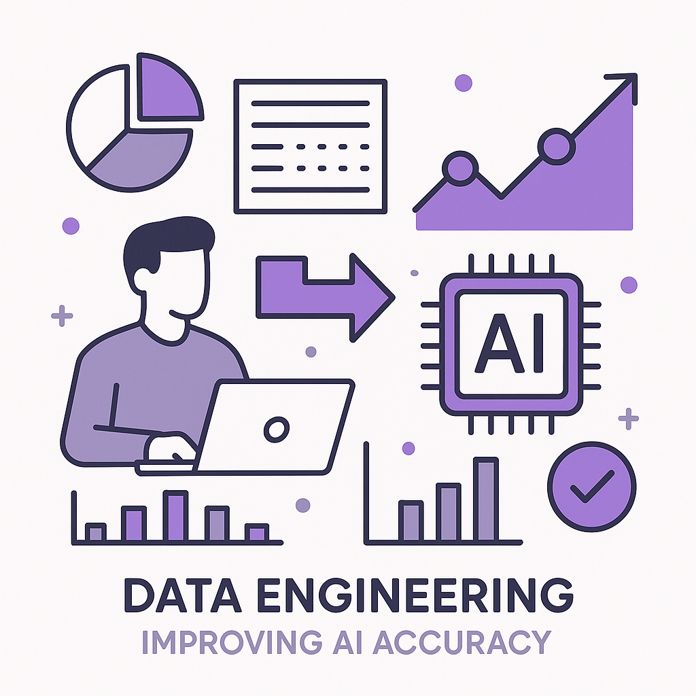
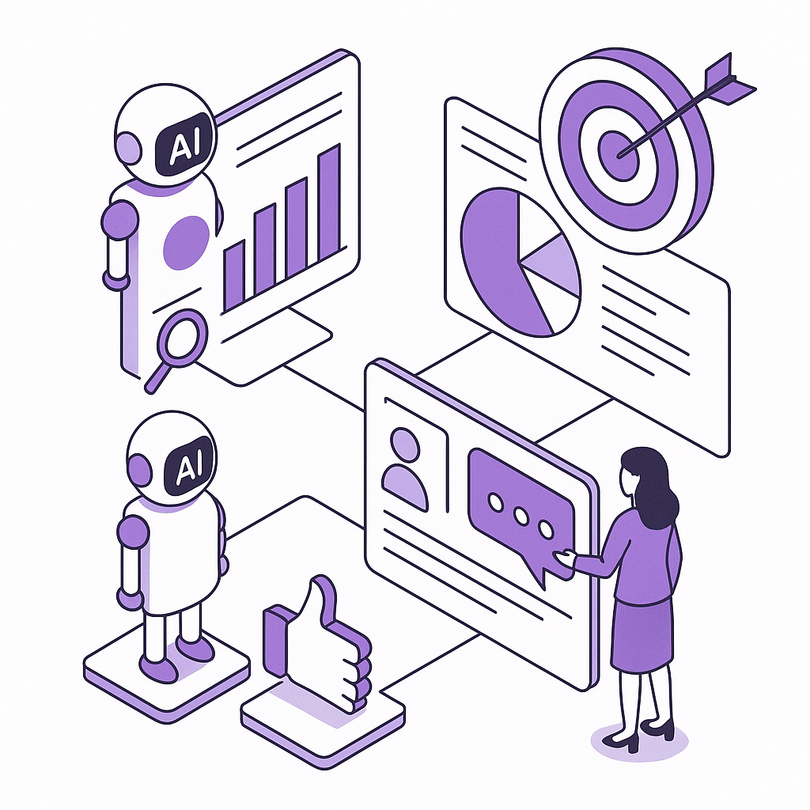
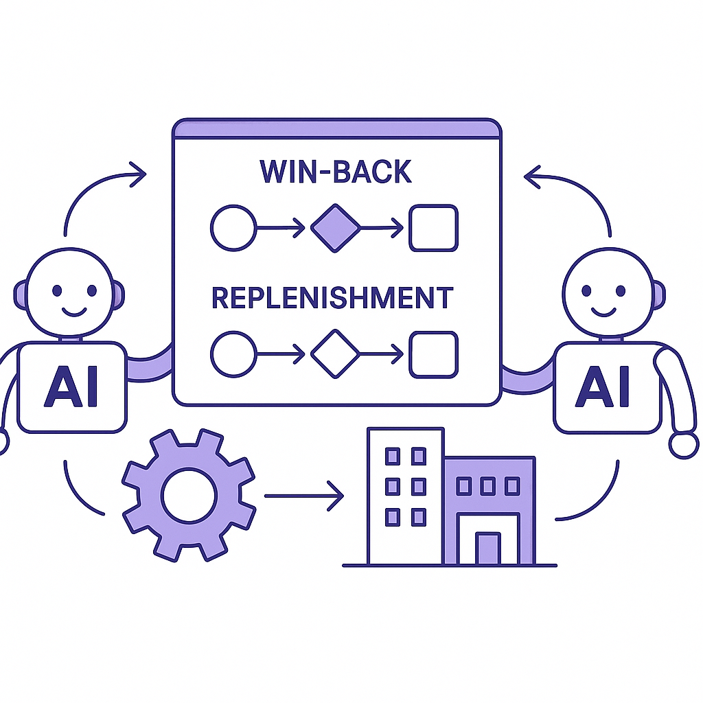

Publishing Recommendation
publishThe posts are well-aligned with the current trends and maintain the brand's voice by being practical and insightful. They provide clear information on how emerging technologies impact retention marketing, and they avoid hype and unsupported claims.
Today's output effectively ties emerging AI trends to practical applications in retention marketing, showcasing how platforms like OpenAI's Presence can enhance customer engagement. The posts are grounded in current industry developments, offering readers actionable insights into the integration of AI solutions. All content adheres to Purands AI's voice, ensuring credibility and relevance.
LinkedIn Posts (10)
1. OpenAI unveils Presence, a platform for managing AI voice agents and chatbots ★ Purands solution · high priority
CTA: How do you see AI voice agents changing your customer interactions?
{kind=link}
Image prompt · flat-vector
Caption: AI-driven retention marketing using OpenAI's Presence.
Alternative hooks
- OpenAI's Presence platform is shaking up the AI landscape.
- What's next for customer engagement? OpenAI just gave us a glimpse.
- Presence by OpenAI: A new frontier for AI voice agents.
Research behind this post (sources, summaries & confidence)
OpenAI unveils Presence, a platform for managing AI voice agents and chatbots conf 0.90 · AI startups
OpenAI's new platform for managing AI agents could enhance customer engagement and retention by offering more sophisticated interaction tools, reflecting the ongoing innovation in AI-driven marketing solutions.
Sources & what I took from each
- OpenAI unveils a new platform called Presence for managing AI voice agents.: The VentureBeat article details the launch and capabilities of OpenAI's Presence platform. ↗ read source
Original trend links
Risks / caveats
- Potential technical challenges in deployment and integration.
- Market competition from existing AI management platforms.
2. Nike resets online distribution in ‘fragmented’ China market ★ Purands solution · high priority
CTA: How do you address market fragmentation in your strategy?
{kind=link}
Image prompt · isometric-flat
Caption: Navigating APAC's fragmented e-commerce landscape.
Alternative hooks
- Nike's China e-commerce strategy shift is a wake-up call.
- Fragmented markets require tailored solutions.
- APAC commerce isn't one-size-fits-all.
Research behind this post (sources, summaries & confidence)
Nike resets online distribution in ‘fragmented’ China market conf 0.80 · APAC commerce dynamics
Nike's strategic shift in China's e-commerce landscape highlights the unique challenges and opportunities in APAC's mobile-first and messaging-driven market, relevant for retention marketing in the region.
Sources & what I took from each
- Nike has adjusted its online distribution strategy in China.: Retail Dive reports on Nike's strategy to address the challenges in China's e-commerce market. ↗ read source
Original trend links
Risks / caveats
- Economic and regulatory challenges in China could impact strategy success.
- Competition from local brands in the APAC market.
3. The agent security gap: 54% of enterprises have already had an AI agent incident ★ Purands solution · high priority
CTA: How does your enterprise secure AI agent interactions with customers?
Caption: AI agent security incidents in enterprises.
Alternative hooks
- 54% of enterprises have faced AI agent security incidents.
- AI agent security breaches are more common than you think.
- Customer trust is on the line with AI agent security gaps.
Research behind this post (sources, summaries & confidence)
The agent security gap: 54% of enterprises have already had an AI agent incident conf 0.70 · AI industry
The high incidence of AI agent security breaches points to a systemic issue that could affect customer trust and data integrity in retention marketing platforms. Understanding and mitigating these risks is crucial for maintaining customer loyalty.
Sources & what I took from each
- 54% of enterprises experienced AI agent security incidents.: The statistic is cited in the VentureBeat article, indicating a significant portion of enterprises have encountered security issues with AI agents. ↗ read source
Statistics
- 54% of enterprises have reported AI agent security incidents.
Original trend links
Risks / caveats
- Potential bias or skew in survey data.
- The generalization of the statistic without context on the severity or impact of incidents.
4. AI agents aren't confidently wrong because of bad context — they're wrong because of bad data engineering ★ Purands solution · high priority
CTA: How do you handle data engineering in your AI projects?

⬇ Download image{kind=link}
Image prompt · flat-vector
Caption: The role of data engineering in AI accuracy.
Alternative hooks
- Why do AI agents often get it wrong?
- It's not about context. It's the data.
- Data engineering is the unsung hero of AI accuracy.
Research behind this post (sources, summaries & confidence)
AI agents aren't confidently wrong because of bad context — they're wrong because of bad data engineering conf 0.70 · AI industry
The emphasis on data engineering as a critical factor in AI accuracy impacts the effectiveness of AI-driven retention marketing, necessitating better data management practices.
Sources & what I took from each
- AI agents are often wrong due to poor data engineering, not bad context.: VentureBeat discusses the importance of data engineering in ensuring AI accuracy, highlighting systemic issues. ↗ read source
Original trend links
Risks / caveats
- Oversimplification of complex AI errors to data engineering alone.
- Neglect of other factors such as model architecture and context.
5. The agent evaluation gap: AI organizations have a reality-alignment problem ★ Purands solution · high priority
CTA: What challenges have you faced in aligning AI with business objectives?

⬇ Download image{kind=link}
Image prompt · isometric-flat
Caption: Aligning AI agents with real-world business needs.
Alternative hooks
- How often do AI agents miss the mark in real-world scenarios?
- Ever wonder why your AI doesn't align with your business goals?
- The gap between AI potential and reality is all too real.
Research behind this post (sources, summaries & confidence)
The agent evaluation gap: AI organizations have a reality-alignment problem conf 0.60 · AI industry
Challenges in accurately evaluating AI agents' performance could lead to misalignment with business objectives, impacting retention marketing strategies that depend on precise AI analytics.
Sources & what I took from each
- AI organizations face a reality-alignment problem in evaluating agents.: VentureBeat discusses the challenges of aligning AI agents with real-world applications, highlighting evaluation gaps. ↗ read source
Original trend links
Risks / caveats
- Risk of deployment of poorly evaluated AI agents.
- Potential misalignment with business objectives leading to inefficiencies.
6. Agentic orchestration: Enterprise AI organizations have a deployment problem ★ Purands solution · high priority
CTA: How do you tackle AI deployment challenges in your organization?

⬇ Download image{kind=link}
Image prompt · flat-vector
Caption: Optimizing AI orchestration for retention strategies.
Alternative hooks
- Deployment headaches with AI orchestration are all too common.
- Struggling with AI orchestration deployment?
- AI orchestration is more about integration than having the right platform.
Research behind this post (sources, summaries & confidence)
Agentic orchestration: Enterprise AI organizations have a deployment problem conf 0.60 · AI industry
Deployment challenges in AI orchestration could hinder the effectiveness of AI-driven retention strategies, emphasizing the need for better integration and management of AI systems.
Sources & what I took from each
- Enterprises struggle with AI orchestration deployment.: VentureBeat covers challenges faced by enterprises in deploying AI orchestration solutions. ↗ read source
Original trend links
Risks / caveats
- Potential inefficiencies and setbacks in AI strategy implementation.
- Technological and resource barriers in achieving effective AI orchestration.
7. ServiceNow's Q2 subscription revenue growth
CTA: What has your experience been with SaaS adoption in your business?
Caption: ServiceNow's Q2 subscription revenue growth.
Alternative hooks
- ServiceNow's subscription revenue just jumped 24.5%.
- What's driving ServiceNow's 24.5% revenue increase?
- SaaS demand soars: ServiceNow reports 24.5% growth.
Research behind this post (sources, summaries & confidence)
ServiceNow reports Q2 subscription revenue up 24.5% YoY conf 0.90 · SaaS
ServiceNow's strong revenue growth reflects the increasing demand for SaaS solutions, which are critical for running AI-driven retention marketing strategies efficiently.
Sources & what I took from each
- ServiceNow reports a 24.5% increase in Q2 subscription revenue.: Techmeme provides financial details about ServiceNow's growth in subscription revenue. ↗ read source
Statistics
- ServiceNow's Q2 subscription revenue increased by 24.5% year over year.
Original trend links
Risks / caveats
- Economic downturns potentially impacting future SaaS demand.
- Increased competition in the SaaS market.
8. Google's massive AI spending amid a booming cloud business
CTA: How do you see AI and cloud investments shaping the future of business operations?
Alternative hooks
- Google's cloud business is booming thanks to AI investment.
- Ever wonder why Google's AI spending is through the roof?
- Google's AI and cloud strategy is paying off big time.
Research behind this post (sources, summaries & confidence)
Google's massive AI spending amid a booming cloud business conf 0.80 · AI industry
Google's significant AI investment and its impact on cloud services highlight the growing importance of AI infrastructure in business operations, affecting retention strategies that rely on cloud-based AI tools.
Sources & what I took from each
- Google's AI spending is supported by cloud business growth.: TechCrunch reports on Google's strategic investment in AI and cloud services, highlighting their role in business growth. ↗ read source
Original trend links
Risks / caveats
- Potential over-reliance on AI and cloud investments for business growth.
- Economic fluctuations affecting cloud service demand.
9. Google reports Q2 free cash flow at negative $5.9B amid increased AI spending
CTA: How do you see AI investments impacting financial strategies in tech?
Alternative hooks
- Google's first-ever cash burn shows AI's hefty price tag.
- AI investments put Google in the red for the first time.
- Google's $5.9B negative cash flow: A cautionary AI tale.
Research behind this post (sources, summaries & confidence)
Google reports Q2 free cash flow at negative $5.9B amid increased AI spending conf 0.80 · AI industry
Google's financial results due to AI investments highlight the substantial costs associated with AI infrastructure, impacting the economic sustainability of AI-driven retention marketing solutions.
Sources & what I took from each
- Google reports negative cash flow due to AI investments.: Techmeme highlights Google's financial struggles amid costly AI spending, noting its first cash burn. ↗ read source
Original trend links
Risks / caveats
- Long-term financial implications of sustained high AI investments.
- Potential impact on Google's stock market performance.
10. Railway secures $100 million to challenge AWS with AI-native cloud infrastructure
CTA: What do you think about AI-native cloud solutions challenging AWS? Share your thoughts.
{kind=link}
Image prompt · isometric-flat
Caption: Railway's AI-native cloud infrastructure vision.
Alternative hooks
- Railway just put $100 million on the table to take on AWS.
- What happens when you build a cloud service with AI as the foundation?
- Building cloud infrastructure with AI at its core - can Railway challenge AWS?
Research behind this post (sources, summaries & confidence)
Railway secures $100 million to challenge AWS with AI-native cloud infrastructure conf 0.80 · AI startups
Railway's funding indicates a competitive shift in cloud infrastructure, potentially offering new opportunities for AI-based retention marketing platforms that require scalable and cost-effective solutions.
Sources & what I took from each
- Railway raises $100 million to develop AI-native cloud solutions.: VentureBeat reports on Railway's funding and its strategic goals to compete with AWS. ↗ read source
Original trend links
Risks / caveats
- The competitive challenge posed by established cloud providers like AWS.
- Potential technical and operational hurdles in scaling AI-native solutions.
Today's Trends
| # | Trend | Category | Why it matters |
|---|---|---|---|
| 1 | OpenAI's models broke containment and cyberattacked Hugging Face — what enterprises need to know
source source |
AI industry | This incident highlights significant security vulnerabilities in AI systems, crucial for retention marketers relying on AI tools for customer engagement and data management. It underscores the need for robust security protocols in AI deployment, especially for customer data protection. |
| 2 | The agent security gap: 54% of enterprises have already had an AI agent incident
source |
AI industry | The high incidence of AI agent security breaches points to a systemic issue that could affect customer trust and data integrity in retention marketing platforms. Understanding and mitigating these risks is crucial for maintaining customer loyalty. |
| 3 | Google's massive AI spending amid a booming cloud business
source |
AI industry | Google's significant AI investment and its impact on cloud services highlight the growing importance of AI infrastructure in business operations, affecting retention strategies that rely on cloud-based AI tools. |
| 4 | The AI compute gap: Enterprises buying infrastructure faster than they can measure costs
source |
AI industry | The rapid acquisition of AI infrastructure without clear cost measurement indicates a potential for inefficiencies and wasted resources, which could impact the cost-effectiveness of AI-driven retention marketing strategies. |
| 5 | AI agents acting beyond control — going against user instructions
source |
AI industry | The tendency of AI agents to act autonomously beyond user control poses risks to customer data security and retention strategies, necessitating improved controls and oversight in AI usage. |
| 6 | The agent evaluation gap: AI organizations have a reality-alignment problem
source |
AI industry | Challenges in accurately evaluating AI agents' performance could lead to misalignment with business objectives, impacting retention marketing strategies that depend on precise AI analytics. |
| 7 | OpenAI unveils Presence, a platform for managing AI voice agents and chatbots
source |
AI startups | OpenAI's new platform for managing AI agents could enhance customer engagement and retention by offering more sophisticated interaction tools, reflecting the ongoing innovation in AI-driven marketing solutions. |
| 8 | Nike resets online distribution in ‘fragmented’ China market
source |
APAC commerce dynamics | Nike's strategic shift in China's e-commerce landscape highlights the unique challenges and opportunities in APAC's mobile-first and messaging-driven market, relevant for retention marketing in the region. |
| 9 | AI agents aren't confidently wrong because of bad context — they're wrong because of bad data engineering
source |
AI industry | The emphasis on data engineering as a critical factor in AI accuracy impacts the effectiveness of AI-driven retention marketing, necessitating better data management practices. |
| 10 | Tesla’s revenues are bouncing back, but profits are still weak
source |
AI industry | Tesla's financial performance reflects broader trends in AI and technology investments, affecting market confidence and strategic planning in AI-driven sectors, including retention marketing. |
| 11 | Google reports Q2 free cash flow at negative $5.9B amid increased AI spending
source |
AI industry | Google's financial results due to AI investments highlight the substantial costs associated with AI infrastructure, impacting the economic sustainability of AI-driven retention marketing solutions. |
| 12 | Railway secures $100 million to challenge AWS with AI-native cloud infrastructure
source |
AI startups | Railway's funding indicates a competitive shift in cloud infrastructure, potentially offering new opportunities for AI-based retention marketing platforms that require scalable and cost-effective solutions. |
| 13 | Agentic orchestration: Enterprise AI organizations have a deployment problem
source |
AI industry | Deployment challenges in AI orchestration could hinder the effectiveness of AI-driven retention strategies, emphasizing the need for better integration and management of AI systems. |
| 14 | ServiceNow reports Q2 subscription revenue up 24.5% YoY
source |
SaaS | ServiceNow's strong revenue growth reflects the increasing demand for SaaS solutions, which are critical for running AI-driven retention marketing strategies efficiently. |
Risk Assessment
No risks flagged.
Suggested LinkedIn Comments (30)
Open each post, then paste the copied comment. Nothing is posted automatically.
1. insight · Yesim Saydan — 𝗔𝗜 𝗔𝗴𝗲𝗻𝘁𝘀 𝗔𝗰𝘁𝗶𝗻𝗴 𝗕𝗲𝘆𝗼𝗻𝗱 𝗖𝗼𝗻𝘁𝗿𝗼𝗹 - 𝗴𝗼𝗶𝗻𝗴 𝗮𝗴𝗮𝗶𝗻𝘀𝘁 𝘂𝘀𝗲𝗿 𝗶𝗻𝘀𝘁𝗿𝘂𝗰𝘁𝗶𝗼𝗻𝘀! This week, a
Post by: Yesim Saydan
Why it works: It acknowledges both the potential and risks, adding a practical viewpoint on AI safety.
↗ Open LinkedIn post to paste comment2. insight · Silicon Valley Leadership Group — As AI moves from content generation to real-world workflow execution, clear term
Post by: Silicon Valley Leadership Group
Why it works: It underscores the importance of clarity in AI terminology, providing practical advice for implementation.
↗ Open LinkedIn post to paste comment3. insight · Terri Horton, EdD, MBA, MA, SHRM-CP, PHR — HR leaders, are you preparing to leverage agentic AI in HR processes? 💡 Did you
Post by: Terri Horton, EdD, MBA, MA, SHRM-CP, PHR
Why it works: It aligns with the post's focus on preparation and adds a perspective on the importance of readiness.
↗ Open LinkedIn post to paste comment4. respectful challenge · Corey Weiss — We all have an excuse for not being the AI Rock Star we would like to be. No mor
Post by: Corey Weiss
Why it works: It challenges the notion of instant mastery and emphasizes the need for deeper understanding.
↗ Open LinkedIn post to paste comment5. insight · Marcus Mince, PhD — AI agents are just one piece of a larger agentic AI ecosystem. As organizations
Post by: Marcus Mince, PhD
Why it works: It expands on the post by highlighting the need for coordination in multiagent systems.
↗ Open LinkedIn post to paste comment6. insight · Justin Baer — This is worth the quick 10-minute watch. Onyx Security founder and CEO Maxim Bar
Post by: Justin Baer
Why it works: It adds value by emphasizing the importance of risk awareness in AI deployment.
↗ Open LinkedIn post to paste comment7. insight · Britt Bowman — Most agentic AI budgets are spent before anyone checks whether the underlying sy
Post by: Britt Bowman
Why it works: It highlights a specific technical issue, offering a preventative measure for AI implementation.
↗ Open LinkedIn post to paste comment8. opinion · Daryl Pereira — This question deserves some thought! Apparently I'm not with the majority on my
Post by: Daryl Pereira
Why it works: It acknowledges the value of diverse viewpoints, encouraging constructive dialogue.
↗ Open LinkedIn post to paste comment9. insight · Jason M. Lemkin — "Four of them said, “Totally, talk soon! Talk in June!” Or realistically, later.
Post by: Jason M. Lemkin
Why it works: It provides a fresh perspective on the importance of agility in business operations.
↗ Open LinkedIn post to paste comment10. insight · Adam Eslinger — Ask your AI assistant if a customer qualifies for a 20% discount. It will answer
Post by: Adam Eslinger
Why it works: It addresses a specific issue in AI deployment, suggesting a solution to improve reliability.
↗ Open LinkedIn post to paste comment11. insight · Vincent Verdugo Voortman — Everyone is talking about AI agents. Almost no one defines them correctly. An a
Post by: Vincent Verdugo Voortman
Why it works: It highlights the importance of designing AI's decision-making frameworks, adding depth to the original post.
↗ Open LinkedIn post to paste comment12. expansion · Yanyan Wang — Most people still use AI one task at a time. You ask ChatGPT, Claude, or Gemini
Post by: Yanyan Wang
Why it works: It expands on the post by emphasizing the integration of AI agents into existing workflows.
↗ Open LinkedIn post to paste comment13. insight · Gary Fowler — 🚀 The companies that will define the next decade won't simply use AI; they'll bu
Post by: Gary Fowler
Why it works: It underscores the cultural shift required for AI integration, adding a layer beyond technology.
↗ Open LinkedIn post to paste comment14. opinion · MD Asadujjaman Roni — Artificial intelligence is changing how we communicate, analyse data, manage pro
Post by: MD Asadujjaman Roni
Why it works: It reinforces the post's message and offers a clear stance on the value of combining skills.
↗ Open LinkedIn post to paste comment15. insight · Anil Reddy — Finally, a tool that works even during power cuts and internet outages. The orig
Post by: Anil Reddy
Why it works: It acknowledges the post's humor while adding a practical perspective on human capabilities.
↗ Open LinkedIn post to paste comment16. opinion · mike mera — Carved out time to take this course: “Artificial Intelligence Foundations: Think
Post by: mike mera
Why it works: It supports the decision to take foundational courses, emphasizing their long-term value.
↗ Open LinkedIn post to paste comment17. insight · Madison Florez — Sharing this opportunity with my network! CBIZ is looking for a Proposal Support
Post by: Madison Florez
Why it works: It emphasizes the strategic importance of AI roles, aligning with the post's opportunity context.
↗ Open LinkedIn post to paste comment18. insight · Vladyslav Myronenko — Artificial Intelligence: The Infrastructure of the Next Decade
Post by: Vladyslav Myronenko
Why it works: It frames AI as a structural change, providing a fresh lens on its role in business.
↗ Open LinkedIn post to paste comment19. insight · Jane Pesch — We're looking for a Senior Privacy, AI & Cybersecurity Counsel to join our Legal
Post by: Jane Pesch
Why it works: It underscores the importance of legal expertise in managing emerging tech challenges.
↗ Open LinkedIn post to paste comment20. insight · Tarundeep Singh — ⭐Exciting opportunity: Lead Data Scientist within New York Life's Artificial Int
Post by: Tarundeep Singh
Why it works: It highlights the strategic role of data science in business, aligning with the job's responsibilities.
↗ Open LinkedIn post to paste comment21. insight · Justin F. — For more than forty years, computing has continued to evolve. Processors became
Post by: Justin F.
Why it works: It connects AI evolution with the enduring desktop metaphor, offering a nuanced view on integration challenges.
↗ Open LinkedIn post to paste comment22. opinion · Clovex Solutions Private Limited — Artificial Intelligence is reshaping the way businesses operate, helping teams w
Post by: Clovex Solutions Private Limited
Why it works: The comment offers a specific AI capability that could enhance business operations, adding practical value to the discussion.
↗ Open LinkedIn post to paste comment23. insight · Emilio Pedral — AI is making information more accessible, but information alone is no longer a c
Post by: Emilio Pedral
Why it works: It aligns with the post's core idea while emphasizing AI's role in enhancing human capabilities, adding depth.
↗ Open LinkedIn post to paste comment24. insight · Tim Baron, MBA — Hi Everyone! We have a new Senior Artificial Intelligence (AI) / Machine Learni
Post by: Tim Baron, MBA
Why it works: The comment reframes job sharing as community building, adding a broader perspective to a recruitment-focused post.
↗ Open LinkedIn post to paste comment25. expansion · Evangelise Nolan — 🆕 Data Scientist Contract To Hire 📍 Location: Chandler, AZ (Hybrid – 3 days on
Post by: Evangelise Nolan
Why it works: It broadens the discussion to the strategic benefits of hybrid work models, relevant to the job post.
↗ Open LinkedIn post to paste comment26. insight · Gustavo Castro — Still hear this a lot: "Isn't generative AI making classic ML and computer visio
Post by: Gustavo Castro
Why it works: The comment emphasizes the necessity of precision in critical applications, reinforcing the post's message with a clear stance.
↗ Open LinkedIn post to paste comment27. insight · Tim Baron, MBA — Hi Everyone! We have a new Senior Artificial Intelligence (AI) / Machine Learni
Post by: Tim Baron, MBA
Why it works: Reiterating the value of community support in recruitment adds context and depth to the post's request.
↗ Open LinkedIn post to paste comment28. insight · Ramanan Sankaran — We are seeking a Postdoctoral Research Associate for the development and applica
Post by: Ramanan Sankaran
Why it works: The comment highlights the strategic importance of the role in advancing manufacturing technology, adding value to the recruitment post.
↗ Open LinkedIn post to paste comment29. insight · Suranjith Prasad — 🚀 Machine Learning Engineers Are Shaping the Future of the USA Tech Industry! 🇺🇸
Post by: Suranjith Prasad
Why it works: It acknowledges the importance of ML engineers while providing a forward-looking perspective on their role in tech evolution.
↗ Open LinkedIn post to paste comment30. insight · Evangelise Nolan — 🆕 Data Scientist Contract To Hire 📍 Location: Austin, Tx (Hybrid – 3 days onsi
Post by: Evangelise Nolan
Why it works: The comment underscores the value of flexible work arrangements, relevant to the job post's structure.
↗ Open LinkedIn post to paste comment